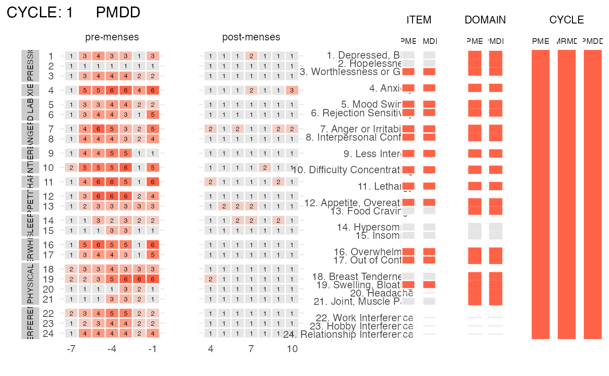

Visualize the scores of a subject's cycle
plot_subject_cycle_obs.RdThis function visualizes the scores (raw data) of a single subject's cycle.
It also internally calls the CPASS function to provide
a visualization of the diagnosis at the ITEM, DSM5 DOMAIN and CYCLE level.
Usage
plot_subject_cycle_obs(
data = data.frame(),
add_diagnosis = TRUE,
color_max_score = "tomato",
silent = FALSE
)Arguments
- data
a
cpassdata frame (useas_cpass_datato convert your data intocpassdata) that contains the symptoms reported in ONE cycle by ONE subject.- add_diagnosis
logical. If
TRUE(default), the diagnoses at the ITEM, DSM5-DOMAIN and CYCLE levels are displayed together with the subject's reported scores. IfFALSE, only the reported scores are displayed.- color_max_score
string specifying the color of a score of 6 (the maximal score) reported by a subject. Any standard color format specification is accepted, i.e. one of the R built-in color names (e.g. "tomato" (default); type
colors()to see the names of all R built-in colors), an RGB hex code (e.g. "#AA2199") or a color specified via one of the color/palette functions (e.g. hsv(0.1,0.9,0.9))- silent
a
logicalspecifying is the function should print messages or run silently. Default isFALSE.
Examples
library(magrittr)
library(dplyr)
#>
#> Attaching package: ‘dplyr’
#> The following objects are masked from ‘package:stats’:
#>
#> filter, lag
#> The following objects are masked from ‘package:base’:
#>
#> intersect, setdiff, setequal, union
data(PMDD_data)
input <-
PMDD_data %>%
dplyr::filter(subject == 2, cycle == 1) %>%
as_cpass_data(., sep_event = "menses")
#> Number of subjects: 1
#> Total number of cycles: 1
#> Percentage of missing scores: 0 %
#> Warning: The 'phase' column will be over-written
#> Percentage of missing scores
#> (in pre- & post-menstrual phases): 0 %
plot_subject_cycle_obs(data = input)
#> PME diagnosis is still experimental and has not be validated clinically. Please, use with caution.
